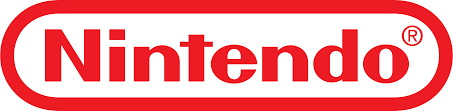
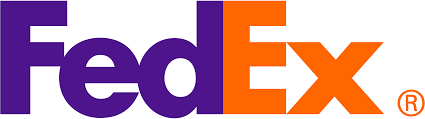
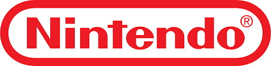
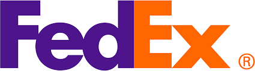
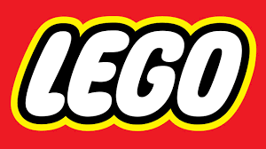
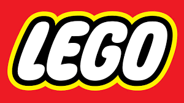
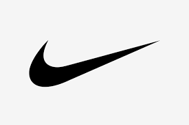
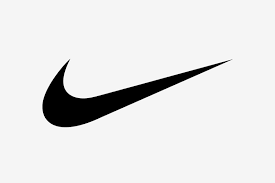

"LOGO"
Pero ¿qué es un Logo?
El término “logo” se deriva de la palabra griega “logos”, que significa “palabra” y es la
representación visual de la marca y con la cual la identificamos otorgándole reconocimiento y
diferenciación.
Se compone de elementos tipográficos y/o gráficos, cuya combinación y composición deben
comunicar un mensaje muy claro y directo, debe transmitir un conjunto de valores y asociaciones
que le agregan valor y puede transformar la visión y entendimiento que tenemos de la empresa.
Ahora, cómo se construye y qué elementos se incorporan a la hora de diseñarlo, son factores que
pueden variar según el propósito, por lo que es importante que entiendas los tipos de logo que
existen.
Tipos de logo
1. Logotipo: es aquel logo que está compuesto únicamente por tipografía, como es el caso de Coca-Cola, Google, Nintendo, Fedex, donde no se necesita de un símbolo o imagen para que sea efectivo.
 


Este tipo de diseño asocia inmediatamente el nombre comercial con la identidad visual evitando
confusiones, aunque si la marca no deja claro lo que hace, puede generar el efecto contrario.
Muchas veces se trabaja con una fuente preexistente o personalizándola de acuerdo a las
necesidades. Por ejemplo: Visa, lego.
 

La tipografía es la protagonista, por lo que se tiene que analizar muy bien qué fuente utilizar
y cuál es la más acorde al concepto que se quiere comunicar.
2. Monogramas: dentro de los Logotipos puedes encontrarte también los monogramas, aquellos
que están compuestos por dos o más letras, cuya composición o combinación puede formar un
símbolo o imagen con características particulares de la empresa o marca que representa.
El uso de éstos te permite una rápida y clara identificación de la marca, sobre todo cuando
son empresas cuyo nombre es en otro idioma y tienen presencia internacional, como es el caso
de HBO, HP.

3. Isotipo o símbolo: es la imagen o el símbolo característico que representa una marca y que, por lo general, no incluye el nombre de la empresa. Funciona por sí solo, por lo que al verlo puedes identificar qué marca es. Ejemplo: Apple, Twitter, Nike, Android.
 


4. Imagotipo: Se caracteriza por usar tipografía en conjunto con imagen y/o símbolo, que al
separarlos siguen funcionando de forma independiente, como Adidas, Shell, WWF.
Si ves la M o el panda de forma aislada lo asocias directamente con la marca.
5. Isologo: Es una combinación de tipografía con imagen y/o símbolo, pero cuya particularidad
es que uno depende del otro y al separarlos dejan de funcionar, como es el caso de Burger King,
Pizza Hut o BMW.